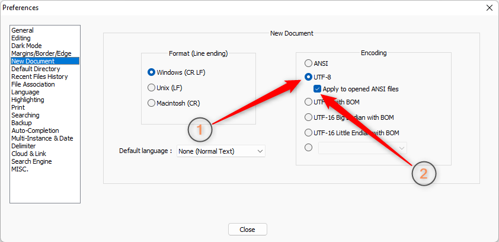

.
.
ВНИМАНИЕ!
На предыдущем шаге мы сказали, что если установить кодировку в настройках Notepad++, то все новые файлы он автоматически будет создавать в этой кодировке. Но мы сделали это без уважения, а именно – не доказали, что это действительно так.
Поэтому сейчас мы попробуем:
Перед тем как начать, убедимся, что, во-первых, текущая кодировка в настройках вашего блокнота – UTF-8, то есть настройки выглядят так, как вы их задали на предыдущем шаге:

А, во-вторых, в вашем блокноте открыта только одна вкладка, которая имеет заголовок new 1:
Если у вас открыто больше одной вкладки, закройте их.
Если после закрытия всех вкладок, у той единственной, которая осталась, другой заголовок,
то вы можете просто закрыть Notepad++ и открыть его заново – он откроется с одной вкладкой, которая будет называться new 1.
Естественно, вы должны понимать, что неважно, сколько у вас открыто вкладок и как они называются.
Все эти подготовительные закрытия нужны только для того, чтобы не запутаться дальше по тексту.
Поэтому, если запутываться вы не планируете, то можно ничего и не закрывать .
Итак, у нас в настройках – UTF-8 и открыта одна вкладка – new 1.
Открываем меню Encoding и убеждаемся, что кодировка вкладки – UTF-8:
Не меняя кодировку, создаем еще 2 новых документа (открываем 2 новых вкладки), на каждой и них открываем меню Encoding,
и убеждаемся, что любая вкладка – new 1, new 2 или new 3 имеет кодировку UTF-8:
Теперь, идем в настройки блокнота и меняем кодировку по умолчанию на ANSI. Окно настроке должно выглядеть вот так:
Закрываем окно настроек и создаем еще 3 новые вкладки - new 4, new 5 или new 6.
Открываем меню Encoding, на любой из этих вкладок и убеждаемся, что все они имеют кодировку ANSI: